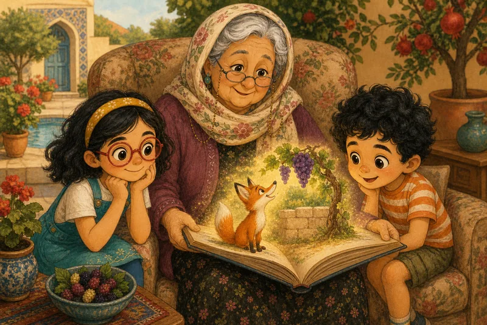
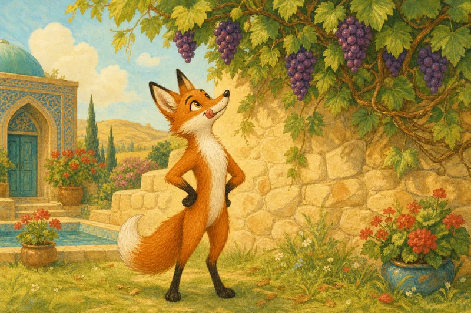
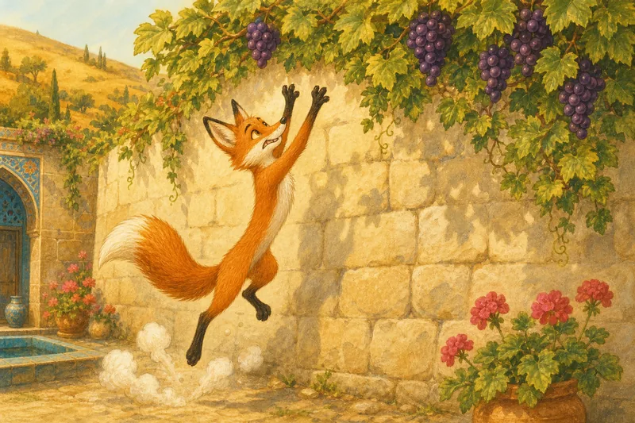
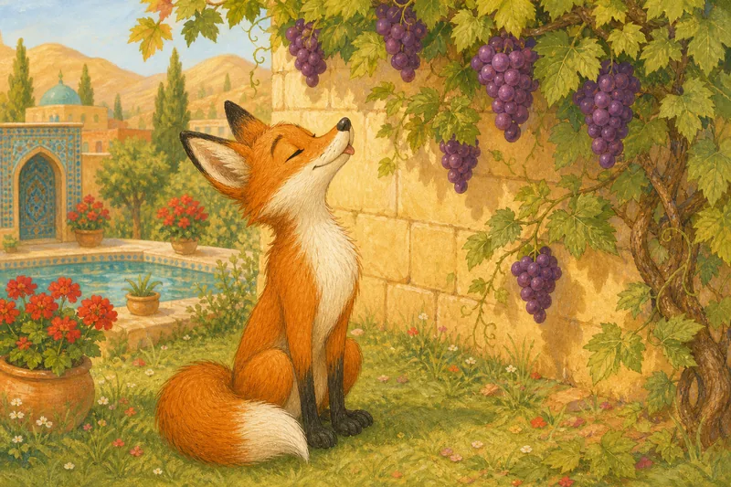
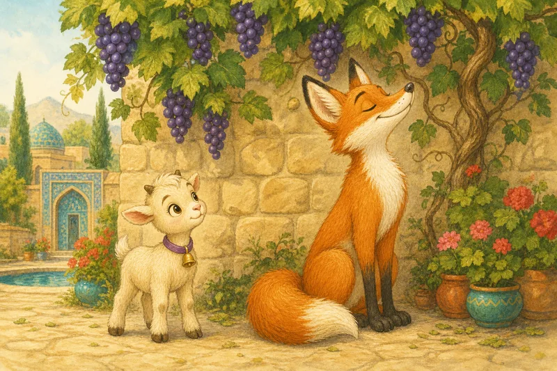
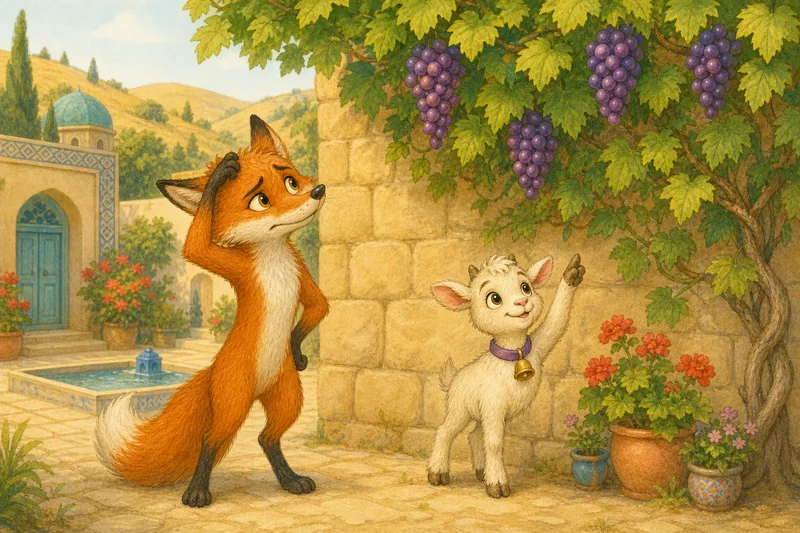
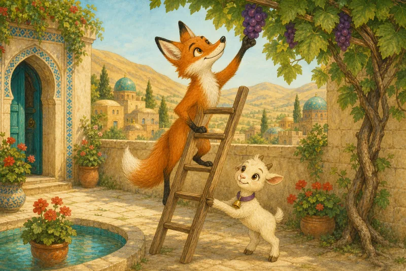
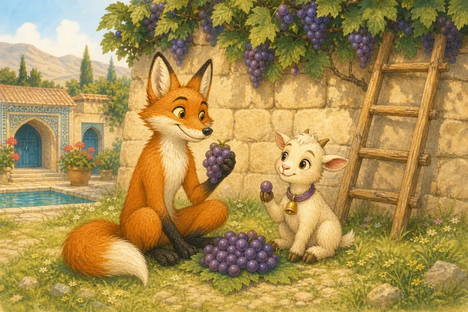

از کجا میگویی؟
انگورها ترش بودند؟
این بازی به جاوااسکریپت نیاز دارد.
روباه و انگورهای شیرین

مادربزرگ مهری این یک قصهٔ خیلی قدیمی است. قصهگویی به نامِ ازوپ بیشتر از دو هزار سال پیش آن را گفته.
یکی بود، یکی نبود، روباهِ گرسنهای از کنارِ دیوارِ یک باغ رد میشد.

بالای سرش، روی تاک، خوشههای درشتِ انگورِ بنفش آویزان بود.
روباه بهبه! این انگورها چه شیرین به نظر میرسند!

روباه پرید. دوباره پرید. پرید و پرید. ولی انگورها خیلی بالا بودند.

آخر نشست و نفسنفس زد. بعد دماغش را بالا گرفت و گفت:
روباه هه! این انگورها که ترشاند. من اصلاً نمیخواهمشان!

یک بزغالهٔ کوچک آنجا علف میخورد. اسمش حبهی انگور بود.
حبهی انگور از کجا میگویی؟

روباه خب… خیلی بالا هستند. من هم از اینهمه پریدن خیلی خستهام.
حبهی انگور ولی اینها دلیلهایی دربارهٔ خودتان هستند، نه دربارهٔ انگورها. یکیشان را چشیدهای؟
روباه نه. هیچوقت.

حبهی انگور کنارِ دیوار نردبانی پیدا کرد. نردبان را محکم گرفت و روباه بالا رفت و یک انگور چید. انگور را گذاشت توی دهانش.
روباه اِ! شیرین است!

روباه از انگورها عذرخواهی کرد و آن دو دوست زیرِ آفتاب انگورها را خوردند.
مادربزرگ مهری روباه نمیدانست انگورها ترشاند. چون دستش به آنها نمیرسید گفت «ترش». پس وقتی کسی چیزی میگوید، بپرس: از کجا میگویی؟
ادعا و دلیل
دوستِ آوا میگوید: «این سوپ مزهاش بد است.»
این یک ادعا است.
ادعا یعنی چیزی که یک نفر میگوید درست است.
«توی آن هویج هست. هیچوقت نخوردهام.»
سوپ را چشیده؟ نه. دلیلش هنوز دلیلِ خوبی نیست.
دربارهٔ خودِ چیز یا دربارهٔ من؟
روباه گفت: «انگورها ترشاند.»
این ادعای او بود.
روباه گفت انگورها بالا هستند. گفت خسته است.
این دلیلها دربارهٔ روباهاند. به ما نمیگویند مزهٔ انگور چطور است.
دلیلهای خوب
«یکیاش را چشیدم و ترش بود.»
«یک پرنده یکیاش را تُف کرد.»
«کوچک و سبزند و انگورِ سبز اغلب ترش است.»
بهانه
گاهی چیزی را میخواهیم و نمیتوانیم داشته باشیم.
آنوقت میگوییم: «اصلاً نمیخواستمش!»
این بهانه است. شبیهِ دلیل است، ولی نشان نمیدهد ادعا درست است. حس میتواند توضیح بدهد چرا آن را میگوییم، ولی نمیتواند نشان بدهد درست است.
همه این کار را میکنند. کارِ باهوشانه این است که متوجه شوی.
از خودت بپرس: این دلیل دربارهٔ خودِ چیز است یا دربارهٔ من؟
«آن بازی را دوست ندارم. باختم.» این دربارهٔ بازی است یا دربارهٔ من؟
- دربارهٔ من است: از باختن بدم آمده.
- دربارهٔ بازی است: بازیِ بدی است.
فکر کن
ادعای روباه چه بود؟ دلیلهایش چه بودند؟
روباه چطور میتوانست بفهمد انگورها ترشاند یا نه؟
یادت میآید یک بار گفتی «اصلاً نمیخواستمش»؟
ایدهٔ بزرگ
دلیلِ خوب دربارهٔ خودِ چیز است.
بپرس: «از کجا میگویی؟»
واژههای تازه
- ادعا: ادعا چیزی است که یک نفر میگوید درست است.
- دلیل: دلیل چیزی است که باعث میشود فکری بکنی: همان «چون»ِ پشتِ حرفت.
- بهانه: بهانه شبیهِ دلیل است، ولی واقعاً نشان نمیدهد ادعا درست است.
- نشانه: نشانه سرنخی است که کمک میکند بفهمی چیزی درست است یا نه.
امتحان کن
روباه میگوید: «انگورها ترشاند.» هر دلیل دربارهٔ انگورهاست یا دربارهٔ روباه؟ کارتها را دستهبندی کن.
این بازی به جاوااسکریپت نیاز دارد.
خودت را بسنج
این بازی به جاوااسکریپت نیاز دارد.
با هم حرف بزنید
از یکی از اهلِ خانه دربارهٔ حرفی که امروز زده بپرس: «از کجا میگویی؟»
یک ماجرا تعریف کن که بهانه آوردهای. دلیلِ واقعی چه بود؟
آفرین، کارآگاه!
تو میتوانی بهترین سؤال را بپرسی: از کجا میگویی؟